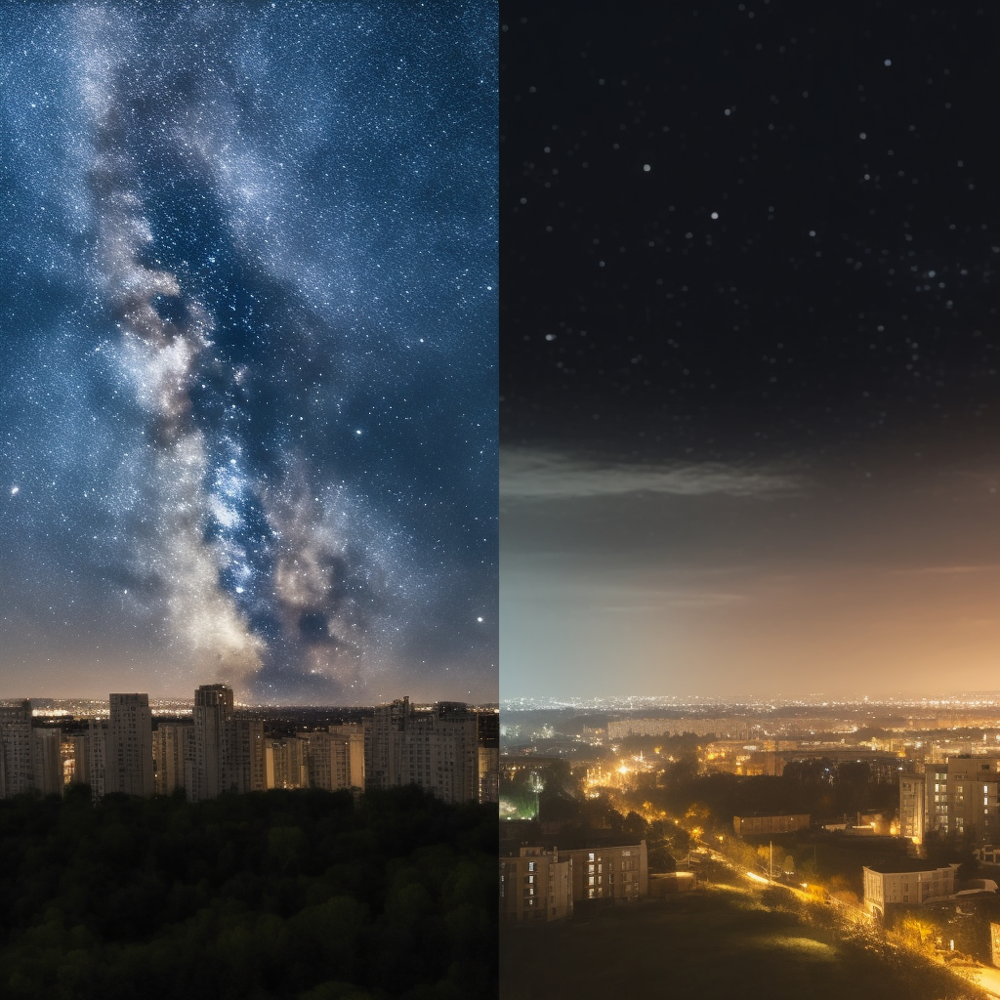
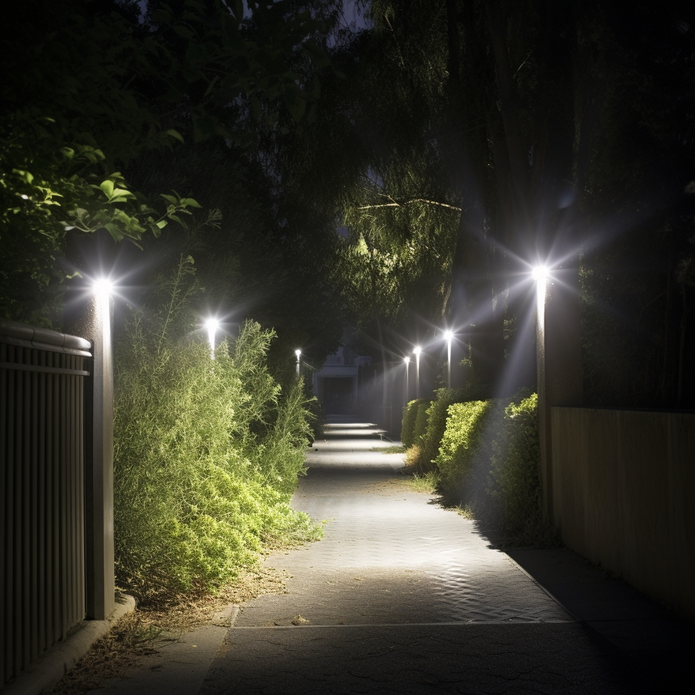
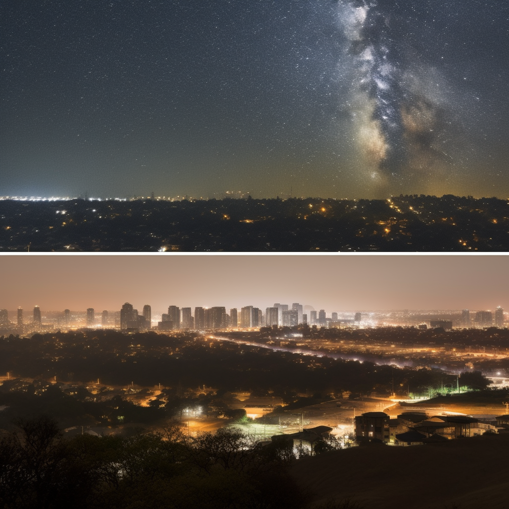

Have you ever looked up at the night sky and marveled at the stars, only to realize that you can't see as many as you used to? The culprit may be light pollution. Light pollution is the excessive or misdirected artificial light that brightens the night sky and has become a growing concern for astronomers, ecologists, and health professionals.
It not only diminishes the beauty of the night sky but also has harmful effects on the environment and our health. In this article, we will discuss the meaning and types of light pollution, the main causes and effects of light pollution, and how we can reduce it to enjoy a night sky without light pollution.
Types and Causes of Light Pollution
Light pollution is caused by a range of sources and can take many forms, all of which can have detrimental effects on our environment, wildlife, and our health. Here are some of the most common types and causes of light pollution:
Skyglow This type of light pollution occurs when artificial light is scattered by dust and gas molecules in the atmosphere, creating a bright and hazy glow in the night sky. Skyglow makes it difficult to see stars and other celestial objects, and it can disrupt the natural cycles of plants and animals that depend on darkness.
Light trespass Light trespass happens when artificial light spills over into areas where it is not intended or needed. This can happen when streetlights, floodlights, or other outdoor lights are poorly directed or not shielded properly. It can be a nuisance to people trying to sleep, and it can disrupt the natural habits of nocturnal animals.
Glare Glare occurs when lights are too bright, causing discomfort and reducing visibility. This can be especially problematic for drivers, cyclists, and pedestrians, as well as for wildlife that are sensitive to bright light.
Over-illumination This occurs when more light is used than necessary, or when lights are left on for extended periods of time. Over-illumination wastes energy and money, and it can contribute to the loss of natural darkness that is essential for many living things.
The main causes of light pollution are urbanization, industrialization, and the widespread use of artificial light. As populations grow and cities expand, more and more outdoor lighting is needed to keep streets, highways, and buildings well-lit and safe. However, this increase in artificial light comes at a cost, as it can have serious negative effects on our environment and our health.
Effects of Light Pollution
The effects of light pollution are widespread and impact various aspects of our lives, from our health to the environment. Here are five of the most significant effects of light pollution:
Disrupting the natural sleep cycle Our bodies are designed to follow natural patterns of light and dark. Light pollution interferes with these natural patterns, disrupting our circadian rhythms and leading to poor sleep quality. This can lead to a host of health problems and long-term health risks.
Harmful to wildlife Light pollution can have a negative impact on wildlife, such as birds and sea turtles. Birds use stars to navigate during migration, and bright city lights can disorient them and cause them to fly off course. Similarly, sea turtles rely on moving away from dark silhouettes to find their way to the ocean, and artificial lights can cause them to become confused and head in the wrong direction.

Affecting human health Light pollution is associated with a range of health problems, including sleep disorders, cardiovascular disease, and cancer. Exposure to bright artificial light at night can also increase the risk of developing mood disorders such as depression and anxiety.
Wasting energy Light pollution wastes energy and contributes to greenhouse gas emissions. It's estimated by the IDA that about 30% of outdoor lighting in the United States is wasted, which translates to about $3 billion in wasted energy costs each year.
Diminishing the beauty of the night sky One of the most obvious effects of light pollution is the diminished beauty of the night sky. The twinkling stars that inspired poets and scientists for centuries are increasingly difficult to see in urban areas. This not only robs us of the chance to appreciate the beauty of the universe but also affects astronomy and scientific research.
Overall, the effects of light pollution are numerous and far-reaching. It's essential to understand the impact of light pollution and take steps to reduce it.
Countries Most Affected by Light Pollution
Light pollution is a rapidly growing problem that affects millions of people worldwide. According to recent research, more than 80% of humanity now experiences light-polluted night skies, with densely populated countries such as Singapore, Kuwait, Qatar, and the United Arab Emirates having the world's most light-polluted skies. In contrast, the top 10 least polluted countries are all located in Africa, with the continent having the dimmest skies overall.
When it comes to specific countries, the G20 group provides a useful snapshot of light pollution levels around the world. The countries with the most light pollution according to the G20 atlas are Italy, South Korea, Germany, France, and the UK, with the area of the three most polluted levels being the highest in Italy. On the other hand, Australia, Canada, and Russia are among the countries with the lowest levels of light pollution in the G20 group.
There are several regions where the Milky Way is no longer visible, including the Belgium/Netherlands/Germany (Dortmund to Bonn cities) transnational region, the Padana plain in northern Italy, and the Boston to Washington series of cities in the northeastern United States. In addition, the London to Liverpool/Leeds region in England, and regions surrounding Beijing and Hong Kong in China and Taiwan are also significantly affected. An area near Cairo, Egypt, in the Nile Delta region, holds the unfortunate distinction of being the location on Earth farthest from the possibility of catching even a glimpse of the Milky Way due to artificial sky brightness at zenith being less than 688 μcd/m−2.
One reason why light pollution is more common in developed countries is that they tend to have more outdoor lighting, including street lights and brightly lit commercial areas. Additionally, developed countries often have more advanced technology and infrastructure, leading to an increased use of electronics and lighting. Moreover, as cities grow and expand, they inevitably produce more light pollution due to the increasing demand for outdoor lighting.
These countries are not only negatively impacting their citizens' health and wellbeing, but they also contribute to the global environmental problem. It is important for individuals and governments to take action to reduce light pollution and preserve the natural beauty of the night sky.
Solutions to Light Pollution
Now that we have a better understanding of the detrimental effects of light pollution, let's explore some solutions that can help reduce its impact on the environment and our health.
Guidelines for responsible outdoor lighting One of the most effective ways to reduce light pollution is by using responsible outdoor lighting. This means using shielded fixtures that direct light downwards, motion sensors that turn off lights when they're not needed, and avoiding bright lights in areas where they're not necessary. These guidelines help minimize light trespass, glare, and skyglow.
Turning off lights at night Another easy and harsh way to reduce light pollution is by turning off lights at night. This not only helps to conserve energy but also reduces the amount of unnecessary light being emitted into the environment. Encouraging individuals to turn off lights when they're not needed can significantly reduce light pollution.
Community efforts to reduce light pollution Communities can also take steps to reduce light pollution. Dark sky reserves, for example, are designated areas where lighting is strictly controlled to minimize light pollution and promote stargazing. Citizen science projects, such as Globe at Night, are also effective in raising awareness about light pollution and collecting data to monitor its impact.
Technological solutions Technological advancements have led to the development of LED lights and smart lighting systems that are more energy-efficient and produce less light pollution than traditional lighting sources. LED lights, for example, use up to 80% less energy than incandescent bulbs and can last up to 25 times longer. Smart lighting systems can also be programmed to turn on and off based on occupancy or daylight levels.
Advocacy and policy solutions Advocacy and policy solutions are also effective in reducing light pollution. Organizations such as the International Dark-Sky Association (IDA) work to raise awareness about light pollution and promote responsible lighting practices. Governments can also regulate light pollution by enacting lighting ordinances and requiring the use of shielded fixtures in outdoor lighting.
By implementing these solutions, we can reduce the impact of light pollution on our environment and health, and preserve the beauty of the night sky for generations to come. However, we should also be careful with these preventive measures since they can come at the cost of all the positive effects of street lights, especially in the case of turning the lighting off.
Conclusion
In conclusion, light pollution is a growing problem that has far-reaching effects on our environment, wildlife, and human health. It is caused by a variety of factors, including excessive and uncontrolled outdoor lighting, urbanization, and technological advances. We have discussed the five types of light pollution and how they impact our daily lives.
It is crucial to preserve the beauty of the night sky and minimize the harmful effects of light pollution. By implementing responsible outdoor lighting guidelines, turning off lights at night, supporting community efforts such as dark sky parks, and using technological solutions like LED lights and smart lighting systems, we can reduce light pollution and save energy.
As individuals and communities, we can take steps to reduce light pollution and protect the night sky. Let us be mindful of our lighting choices and work towards preserving the beauty of the night sky for generations to come. We owe it to ourselves and to the planet to make a positive impact in any way we can, but we should be smart about it to make sure we do not lose all the benefits lighting provides.
This text was written with help of ChatGPT and the figures were generated using Midjourney.
If you're interested in learning more about this research, feel free to reach out!
Rik Spieringhs